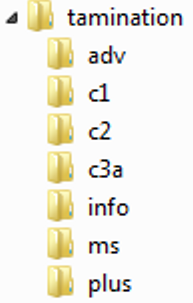

|
Maybe you would like to use TAMinations during your class, but your dance hall doesn't have an Internet connection. Not a problem! You can download and run TAMinations on your laptop. To get all the the animations, download tamination.zip You will need to unzip the file after downloading it. Find the file and double-click on it, selecting the 'Extract all files' option. Then you will have a directory structure like the one shown to the right. Load the tamination/index.html file into your browser to go directly to the animations. To load the animations, the browser needs to read xml files that contain the animation definitions. Some browsers have problems reading local xml files (i.e. not from the internet). Here are some tips for specific browsers:
TAMinations Copyright (C) 2012 by Brad Christie. |
Directory structure of TAMinations. |